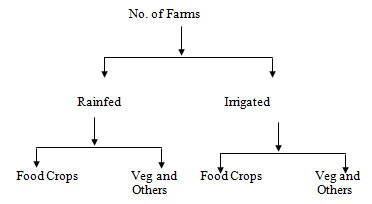

STAM101 :: Lecture 01 :: Data – definition – Collection of data – Primary and secondary data – Classification of data – Qualitative and quantitative data

Basic Concepts
Statistics (Definition)
Quantitative figures are known as data.
Statistics is the science which deals with the
- Collection of data
- Organization of data or Classification of data
- Presentation of data
- Analysis of data
- Interpretation of data
STATISTICS - INTRODUCTION
Data and statistics are not same as used commonly.
Example for data
- No. of farmers in a block.
- The rainfall over a period of time.
- Area under paddy crop in a state.
Functions of statistics
Statistics simplifies complexity, presents facts in a definite form, helps in formulation of suitable policies, facilitates comparison and helps in forecasting.
Uses of statistics
Statistics has pervaded almost all spheres of human activities. Statistics is useful in the administration of various states, Industry, business, economics, research workers, banking, insurance companies etc.
Limitations of Statistics
1. Statistical theories can be applied only when there is variability in the
experimental material.
2. Statistics deals with only aggregates or groups and not with individual objects.
3. Statistical results are not exact.
4. Statistics can be misused.
Collection of data
Data can be collected by using sampling methods or experiments.
Data
The information collected through censuses and surveys or in a routine manner or other sources is called a raw data. When the raw data are grouped into groups or classes, they are known as grouped data.
There are two types of data
- Primary data
- Secondary data.
Primary data
The data which is collected by actual observation or measurement or count is called primary data.
Methods of collection of primary data
Primary data is collected in any one of the following methods
- Direct personal interviews.
- Indirect oral interviews
- Information from correspondents.
- Mailed questionnaire method.
- Schedules sent through enumerators.
1. Direct personal interviews
The persons from whom information are collected are known as informants or respondents. The investigator personally meets them and asks questions to gather the necessary information.
Merits
- The collected informations are likely to be uniform and accurate. The investigator is there to clear the doubts of the informants.
- People willingly supply information because they are approached personally. Hence more response is noticed in this method then in any other method.
Limitations
It is likely to be very costly and time consuming if the number of persons to be interviewed is large and the persons are spread over a wide area.
2. Indirect oral interviews
Under this method, the investigator contacts witnesses or neighbors or friends or some other third parties who are capable of supplying the necessary information.
Merits
For almost all the surveys of this kind, the informants like within a closed area. Hence, the time and the cost are less. For certain surveys, this is the only method available.
Limitations
The information obtained by this method is not very reliable. The informants and the person who conducts a survey easily distort the truth.
3. Information from correspondents
The investigator appoints local agents or correspondents in different places and compiles the information sent by them.
Merits
- For certain kinds of primary data collection, this is the only method available.
- This method is very cheap and expeditious.
- The quality of data collected is also good due to long experience of local representatives.
Limitations
Local agents and correspondents are not likely to be serious and careful.
4. Mailed Questionnaire method
Under this method a list of questions is prepared and is sent to all the informants by post. The list of questions is technically called questionnaire.
Merits
- It is relatively cheap.
- It is preferable when the informants are spread over a wide area.
- It is fast if the informants respond duly.
Limitations
- Were the informants are illiterate people, this method cannot be adopted.
- It is possible that some of the persons who receive the questionnaires do not return them. Their action is known as non – response.
5. Schedules sent through enumerators
Under this method, enumerators or interviewers take the schedules, meet the informants and fill in their replies. A schedule is filled by the interviewer in a face to face situation with the informant.
Merits
- It can be adopted even if the informants are illiterate.
- Non-response is almost nil as the enumerators go personally and contact the informants.
- The informations collected are reliable. The enumerators can be properly trained for the same.
Limitations
- It is costliest method.
- Extensive training is to be given to the enumerators for collecting correct and uniform informations.
Secondary data
The data which are compiled from the records of others is called secondary data.
The data collected by an individual or his agents is primary data for him and secondary data for all others. The secondary data are less expensive but it may not give all the necessary information.
Secondary data can be compiled either from published sources or from unpublished sources.
Sources of published data
- Official publications of the central, state and local governments.
- Reports of committees and commissions.
- Publications brought about by research workers and educational associations.
- Trade and technical journals.
- Report and publications of trade associations, chambers of commerce, bank etc.
- Official publications of foreign governments or international bodies like U.N.O, UNESCO etc.
Sources of unpublished data
All statistical data are not published. For example, village level officials maintain records regarding area under crop, crop production etc. They collect details for administrative purposes. Similarly details collected by private organizations regarding persons, profit, sales etc become secondary data and are used in certain surveys.
Characteristics of secondary data
The secondary data should posses the following characteristics. They should be reliable, adequate, suitable, accurate, complete and consistent.
Variables
Variability is a common characteristic in biological Sciences. A quantitative or qualitative characteristic that varies from observation to observation in the same group is called a variable.
Quantitative data
The basis of classification is according to differences in quantity. In case of quantitative variables the observations are made in terms of kgs, Lt, cm etc. Example weight of seeds, height of plants.
Qualitative data
When the observations are made with respect to quality is called qualitative data.
Eg: Crop varieties, Shape of seeds, soil type.
The qualitative variables are termed as attributes.
Classification of data
Classification is the process of arranging data into groups or classes according to the common characteristics possessed by the individual items.
Data can be classified on the basis of one or more of the following kinds namely
- Geography
- Chronology
- Quality
- Quantity.
1. Geographical classification (or) Spatial Classification
Some data can be classified area-wise, such as states, towns etc.
Data on area under crop in India can be classified as shown below
Region |
Area ( in hectares) |
Central India |
- |
West |
- |
North |
- |
East |
- |
South |
- |
2. Chronological or Temporal or Historical Classification
Some data can be classified on the basis of time and arranged chronologically or historically.
Data on Production of food grains in India can be classified as shown below
Year |
Tonnes |
1990-91 |
- |
1991-92 |
- |
1992-93 |
- |
1993-94 |
- |
1994-95 |
- |
3. Qualitative Classification
Some data can be classified on the basis of attributes or characteristics. The number of farmers based on their land holdings can be given as follows
Type of farmers |
Number of farmers |
Marginal |
907 |
Medium |
1041 |
Large |
1948 |
Total |
3896 |
Qualitative classification can be of two types as follows
- Simple classification
- Manifold classification
(i) Simple Classification
This is based on only one quality.
Eg:
(ii) Manifold Classification
This is based on more than one quality.
Eg:

4. Quantitative classification
Some data can be classified in terms of magnitude. The data on land holdings by farmers in a block. Quantitative classification is based the land holding which is the variable in this example.
Land holding ( hectare) |
Number of Farmers |
< 1 |
442 |
1-2 |
908 |
2-5 |
471 |
>5 |
124 |
Total |
1945 |
Difference between Primary and secondary data
|
Primary Data |
Secondary Data |
1. Original data |
Primary data are original because investigation himself collects them. |
Secondary data are not original since investigator makes use of the other agencies. |
2. Suitability |
If these data are collected accurately and systematically their suitability will be very positive. |
These might or might not suit the objectives of enquiry. |
3. Time and labour |
These data involve large expenses in terms of money, time and manpower |
These data are relatively less costly. |
4. Precaution |
don’t need any great precaution while using these data. |
These should be used with great care and caution. |
| Download this lecture as PDF here |